You can run OpenSim on non-Windows computers through a virtual machine (VM).
Requirements
The purpose of running a virtual machine is to simulate a Windows environment on non-Windows computers. In order for that to happen you will need two things:
Virtual Machine Software
There are a few programs that allow you run a virtual machine. The common ones are:
We will use VirtualBox as the example in this tutorial.
Windows Image File
You will need a Windows image file (.iso) and a product key (i.e., license) to install Windows on the virtual machine. Institutional users can generally get both through Microsoft's DreamSpark website (formerly MSDN-AA).
OpenSim is currently supported on:
- Windows XP
- Windows 7
- Windows 8
Setting up a Windows 7 Virtual Machine on VirtualBox
We walk through how one may create a Windows 7 virtual machine on their computer, using VirtualBox, in order to run OpenSim. We show screenshots of most steps of this process. Your screen may look a little different. We don't delve into any details; if you have further questions, look at documentation for VirtualBox.
After downloading and installing VirtualBox from the link above, open VirtualBox. You should see a window like that shown below. Click New to make a new virtual machine:

Type a name for the virtual machine, and select the correct version of the Windows operating system. In our case, we'll be using Windows 7, 64 bit. Check with the source of your Windows image file to see if it's a 32 bit or 64 bit operating system.
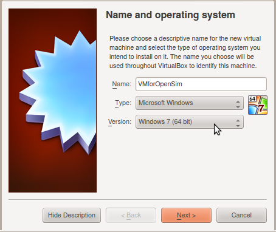
Next, we select how much RAM we want our virtual machine to have. The virtual machine's share of RAM is taken from your computer's RAM. VirtualBox advises that you give the virtual machine less than half of your RAM. We suggest you give the virtual machine at least 1 gigabyte of RAM for OpenSim to run smoothly.
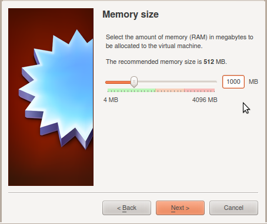
We'll need to create a virtual hard drive for the virtual machine. We choose to do this now.
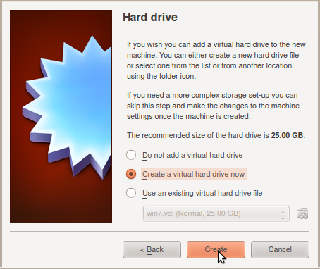
We'll go with the default option, a VDI hard drive file type.
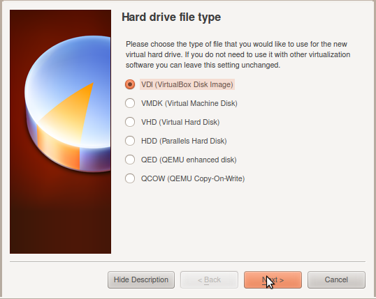
To make sure that we don't run out of space in the virtual machine, we'll create a hard drive whose space is dynamically allocated from your computer's actual hard drive(s). However, if you're confident you won't run out of space, it's fine to use a fixed size virtual hard drive.
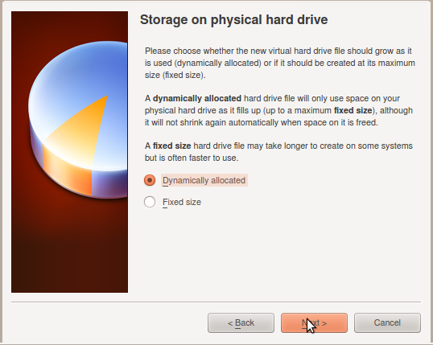
We've chosen to create a hard drive with 25 gigabytes of storage space. You should set the size to be at least 12 gigabytes, but you'll need more if you ever install additional programs such as Microsoft Visual Studio. After installing OpenSim, about 10 gigabytes will be used.
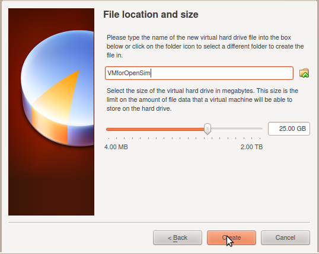
We've created the virtual machine; the equivalent of purchasing computer hardware and assembling it together. However, we haven't yet installed the operating system on the virtual machine. To do so, Start the virtual machine by clicking the green arrow:
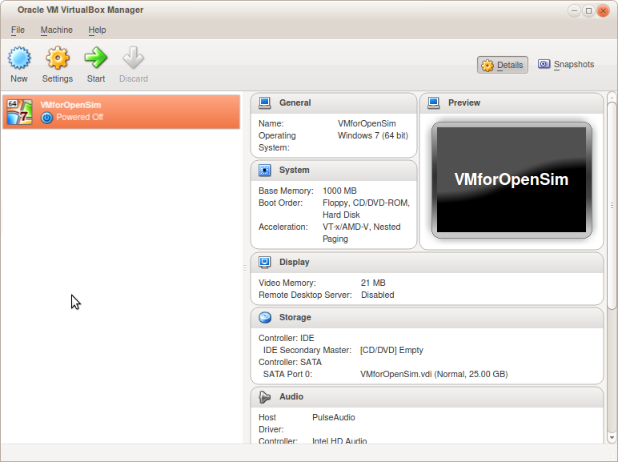
Select the Windows image file from its location on your computer. This will depend on how you obtained the Windows image file, where you saved it, and what its name is.
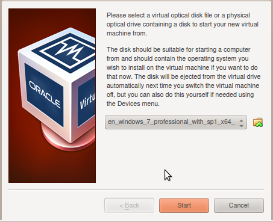
The virtual machine should boot from the image file, and eventually you'll get a screen to start the installation process for Windows 7. Go through this installation process.

We're not upgrading, because there is no preexisting operating system on the virtual machine. Select Custom (advanced):
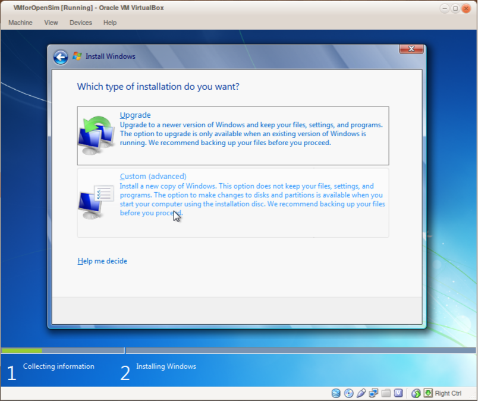
For any further options you're presented with, you can simply select the default options. Eventually, the installation process will reboot the virtual machine and you'll come to a screen like this:
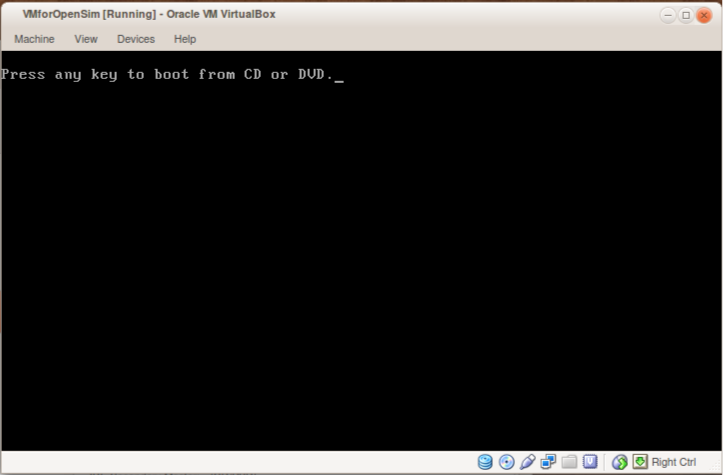
Do NOT press a key; we don't want to boot from CD or DVD. That would start the installation process from the beginning.
You'll eventually come to a screen asking for your product key. You should have this through whichever method you went through to purchase Windows 7, or to otherwise obtain a legal license. If you don't yet have a license, you'll be able to use Windows 7 anyway for a limited amount of time.
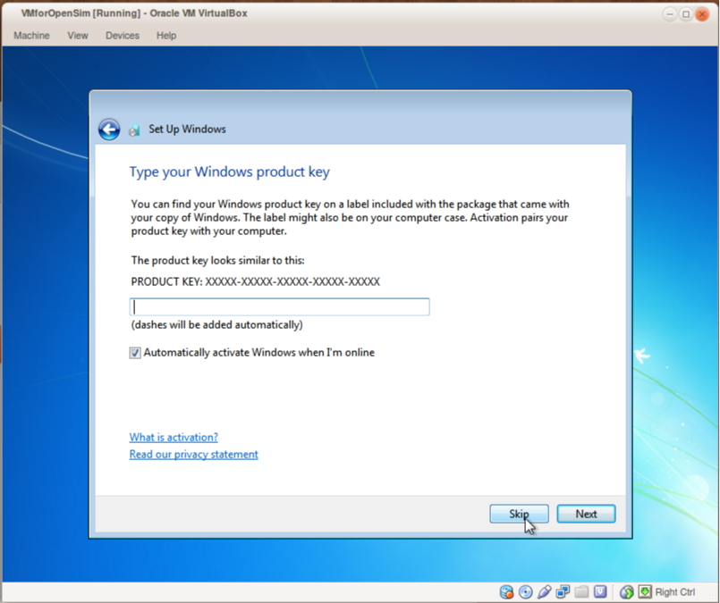
Once the Windows 7 installation process finishes, you can navigate to the SimTK website and download OpenSim. From here on, you can treat the virtual machine as a regular computer.
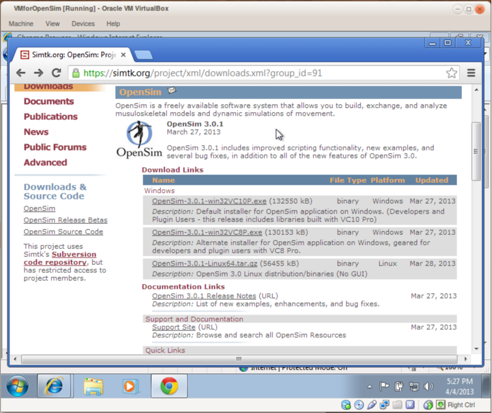
As a last note, you'll probably want to install VirtualBox Guest Additions onto your virtual machine. See this website for instructions.
{kind=link}
{kind=link}
{kind=link}
{kind=link}
{kind=link}
{kind=link}
{kind=link}
{kind=link}
{kind=link}
{kind=link}
{kind=link}
{kind=link}
{kind=link}